Sequence work Claude can see, run, and hand back.
Motif drops a real molecular-biology workbench into Claude Science: plasmid maps, restriction digests, primer design, and cloning plans. Each one lands as an artifact you can open and inspect down to the base pair.
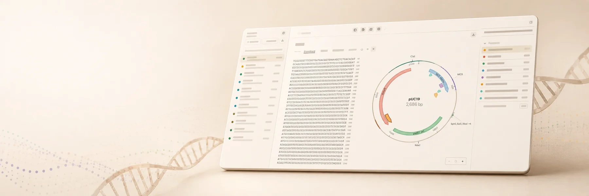
A quick intro to Motif.
A short overview of what Motif is. To see it run on a real pathway, follow the session below, or open the interactive artifact yourself.
From a prompt to a pathway on the bench.
One continuous session in Claude Science. Ask it to open a pathway, and Motif fetches the genes, loads them as records, and aligns the ones you choose, with every step an object you can inspect.
-
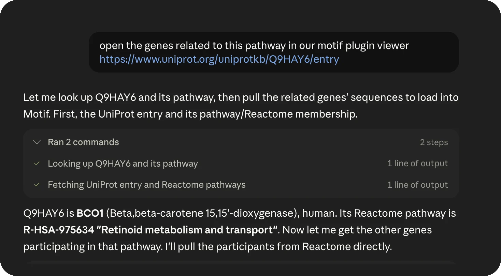
UniProt Q9HAY6 → Reactome R-HSA-975634 · retinoid metabolism -
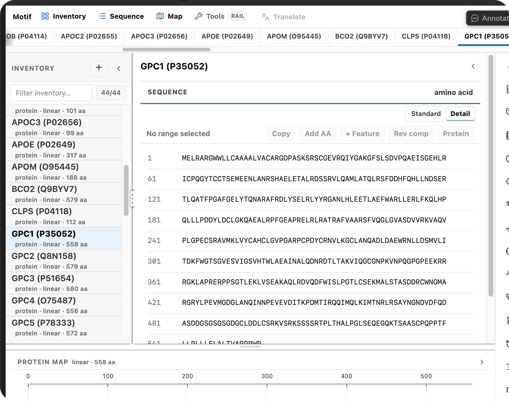
44 records · GPC1 (P35052) · protein · 558 aa -
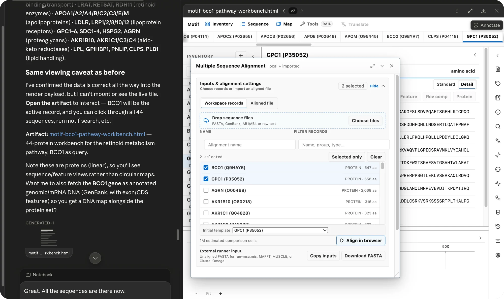
Align in browser · or MAFFT / MUSCLE / Clustal Omega -
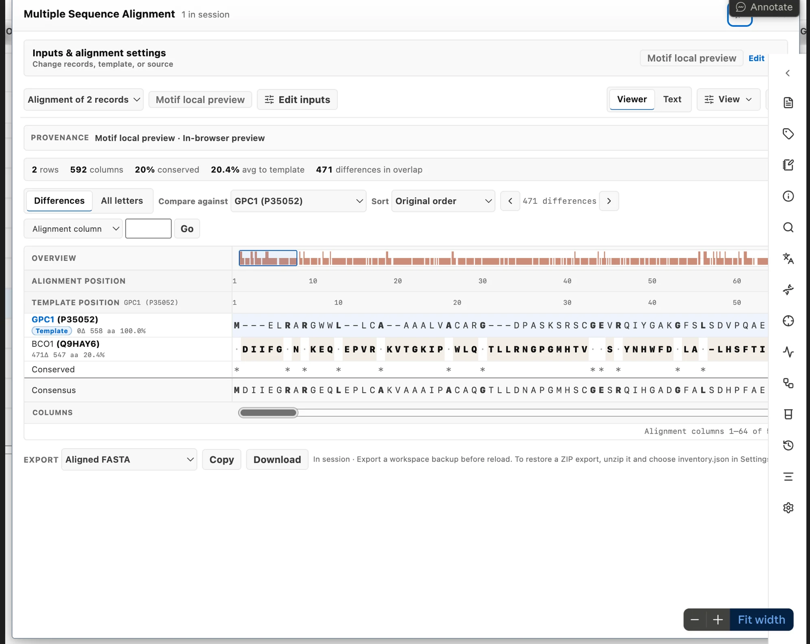
BCO1 vs GPC1 · 592 columns · 20% conserved · export aligned FASTA
Not chat about DNA. A bench Claude works at.
The interesting moment isn't a paragraph describing a plasmid. It's watching the agent change a real workspace (add records, cut a sequence, annotate a map) and then being able to inspect every result yourself.
Visible artifacts
Every step lands as a record on the bench: a map, a digest, a translated protein, not a wall of text.
Local-first
The artifact runs entirely in your browser. Sequences stay on your machine, with no cloud round-trip and no account.
Auditable lineage
Derived records remember their parent and how they were made. You can trace a protein back to the bases it came from.
One thread, from source to export.
Ask Claude Science to do real sequence work, and Motif carries it through a lineage you can follow and check at every node.
Bring in a real record
Paste or import FASTA and GenBank. Motif detects the sequence type, computes GC content, finds ORFs, and maps features, so Claude starts from ground truth, not a guess.
Select once, everywhere
Click a feature on the circular map and the exact span lights up in the sequence; select bases and the map follows. Restriction sites, reading frames, and stats stay in sync.
Transform into new records
Translate a CDS, reverse-complement a strand, run a digest, design primers, or plan an assembly. Each result becomes its own record on the bench.
Check the work, then change your mind
Motif surfaces the things a careful scientist would catch: an internal Type IIS site, an impossible cut geometry, a stale primer input. The warning is visible, and the corrected result replaces it.
Hand it back, portable
Export the record, the annotated map, or the whole workspace as FASTA, GenBank, or a self-contained file. What Claude built, you keep.
Hover the map. It's the real thing.
This circular map is drawn the same way Motif draws it on the bench: features, restriction sites, and coordinates, all interactive. Hover or focus a feature to read its span; click to hold a selection. No screenshot, no video.
- Feature arcs for AmpR, lacZα, the pMB1 origin, and the MCS
- Unique-cutter restriction ticks around the polylinker
- The same rendering engine that ships in the artifact
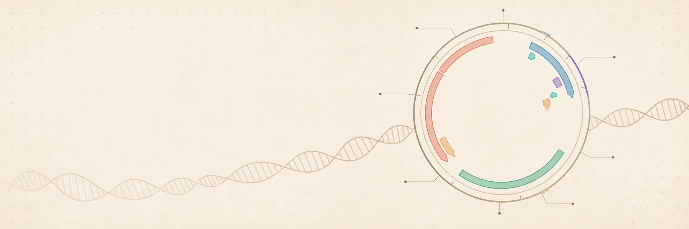
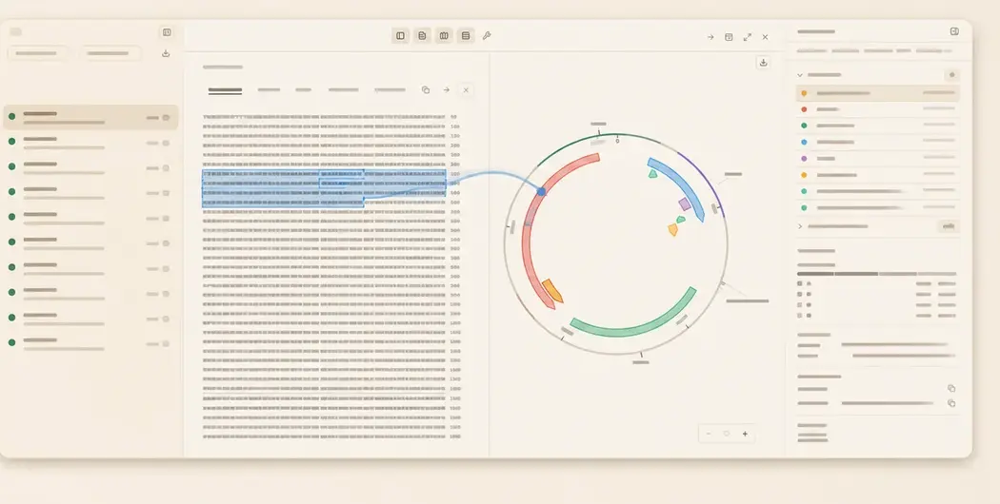
Ask in plain language. Get a real object back.
You type an instruction in Claude Science. Motif turns it into concrete actions on the workspace, and the result is an object you can click, measure, and export, not a description you have to trust.
- Deterministic bio functions, so the same request gives the same answer
- Selections carry coordinates, so you always know exactly what was touched
- The object is the source of truth, not the prose around it
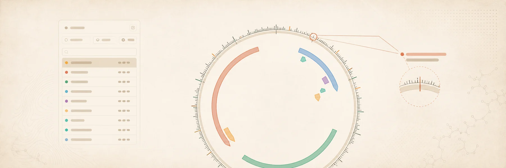
Investigate a construct like a scientist.
Screen a plasmid against 153 built-in restriction enzymes, isolate the unique cutters, preview the digest geometry, and plan Gibson or Golden Gate assemblies, with internal Type IIS sites flagged before they wreck a reaction.
- Restriction digest with fragment sizes and cut positions
- Primer design with Tm / GC tuning and enzyme-tail presets
- Gibson & Golden Gate planning with compatible-overhang checks
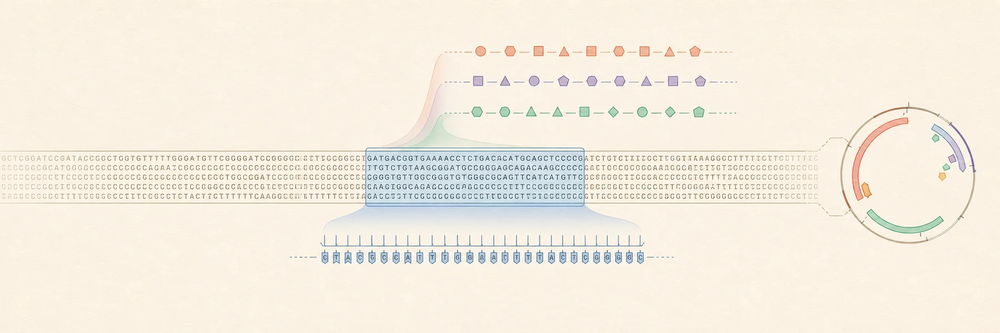
From bases to biology, with receipts.
Translate a reading frame, optimize codons for E. coli, human, or yeast, align two sequences, or scan for a motif. Every derived record keeps a note of its parent and the transform that made it.
- Six-frame ORF detection, GC plots, and codon-usage analysis
- Needleman-Wunsch pairwise alignment and IUPAC motif search
- Translation, reverse complement, and reverse translation
Claude drives the bench. You watch it move.
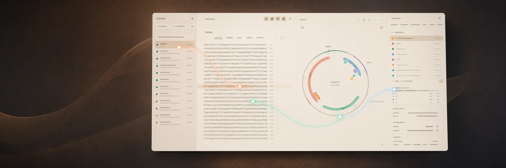
Type IIS site, an impossible cut, a stale primer input. The corrected result replaces the flawed one.A full sequence toolkit, on one bench.
Everything runs on a deterministic bio engine, the same functions whether you click them or Claude does.
Read & inspect
Circular and linear maps that stay in lockstep with the sequence.
- Circular plasmid maps
- Feature annotations
- Reading-frame overlays
- Live GC & length stats
Cut & clone
Plan a construct end-to-end, with the failure modes surfaced early.
- Restriction digest
- Primer design (Tm / GC)
- Gibson & Golden Gate
- PCR simulation
Analyze
The measurements you'd reach for, computed the same way every time.
- Six-frame ORF detection
- Codon optimization
- Pairwise alignment
- IUPAC motif search
Transform
Turn one record into another and keep the trail.
- Translation
- Reverse complement
- Reverse translation
- Parent & derivation notes
Import & export
Standard formats in, standard formats out, plus a portable snapshot.
- FASTA
- GenBank
- Raw sequence
- Self-contained workspace
Agent-ready
A small, honest bridge lets Claude read and prepare what's on the bench.
- Read the active record
- Inspect a selection
- Prepare records & digests
- Explain what it found
Same record, every view.
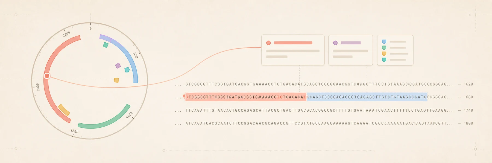
map ↔ bases in sync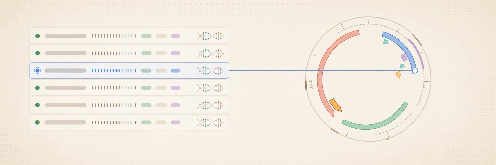
guide → target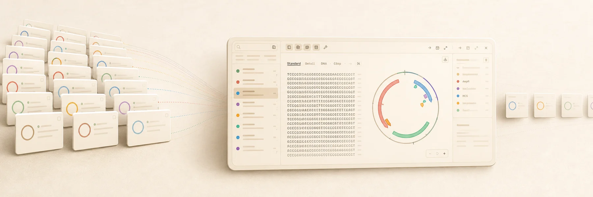
inventory → insight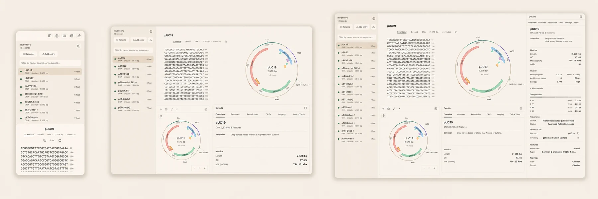
compact → panoramicThree ways in.
Open the bench directly, add it to Claude Science, or wire the browser bridge for agent-driven work.
Open the artifact
The whole workbench is a single self-contained file, and it starts with pUC19 loaded. No install, no sign-in. Open it and start clicking.
Launch the bench# nothing to install open motif-artifact.html # pUC19 is already on the bench
Get it running in Claude Science
Motif runs from a local checkout, so setup is a few terminal commands (Node 22.12+). Clone the repo, build the connector, then grant Claude Science read access to that folder and relaunch it.
Rather not touch a terminal? Hand these steps to a coding agent like Claude Code. It can clone, build, register the connector, and run the health check, so all you do is grant Motif's folder in Claude Science and relaunch.
Full setup guide# 1 · get the code (needs Node 22.12+) git clone https://github.com/jvogan/motif cd motif && npm ci # 2 · build + register the local connector npm run claude-science:setup # 3 · in Claude Science: grant this folder, # fully quit + reopen, then reconnect "motif-local"
Read & prepare from an agent
With the bench open, a small bridge lets an agent read the active record and prepare new ones. It prepares and inspects; you verify.
Where the line is// read what's on the bench (window.motifHelp() lists them all) window.motifGetActiveRecord() // prepare derived records window.motifAddRecords([…])
Common snags, and the honest fix.
Motif is local-first, so most snags come down to Claude Science's sandbox reaching your files, not Motif's behavior. The full troubleshooting guide covers each case in depth.
“Operation not permitted,” or the tools won't load
The tool ran, but no workbench appeared
The sequence shows as plain text, not the viewer
The connector shows up, but its tools are missing
Node installed through nvm or asdf gets denied
Not sure where to start? Try one of these.
Open Motif in Claude Science and paste any of these. You'll get a real object back, one you can click, measure, and export.
Meet the lab crab
Your sequence sidekick. It pokes around plasmids so you don't have to squint at raw bases.
Welcome to the benchYou choose what Claude can access.
Claude is a research partner, on and off the bench. Motif is where Claude does the molecular biology with you and shows its work. You choose the folder, the access level, and whether each request runs.
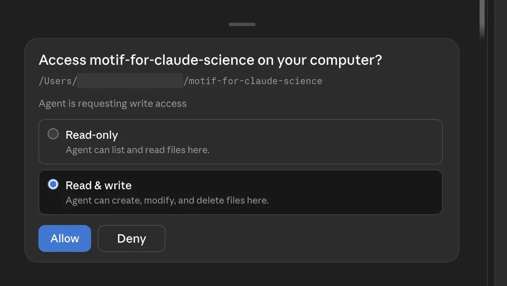
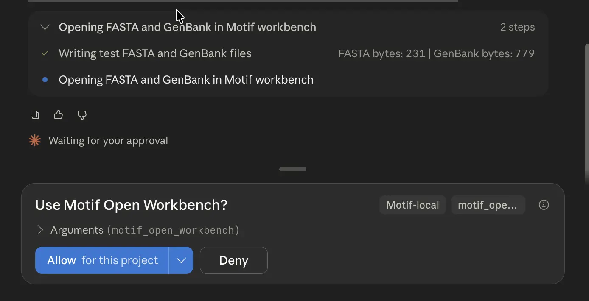
What Motif claims, and what it doesn't.
Sequence design is real science with real consequences. Motif is a design and inspection bench, not a validation service.
Motif does
- Prepare, inspect, and explain sequence artifacts
- Compute analyses deterministically and show its work
- Flag likely mistakes: internal cut sites, bad geometry
- Keep provenance so results can be traced and checked
Motif won't pretend
- That a proposed plan has been wet-lab validated
- To be a clinical or diagnostic tool
- To have changed a construct unless you can see and verify it
- To replace review by a qualified scientist
Put a real bench in the conversation.
Open Motif, load a plasmid, and let Claude Science do sequence work you can actually inspect.